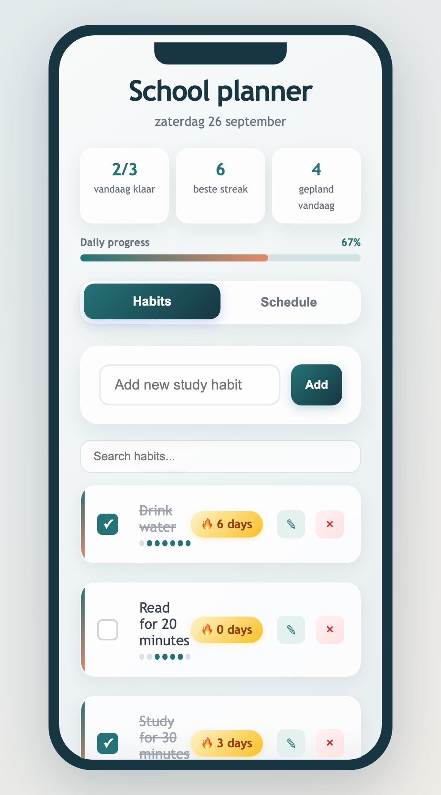
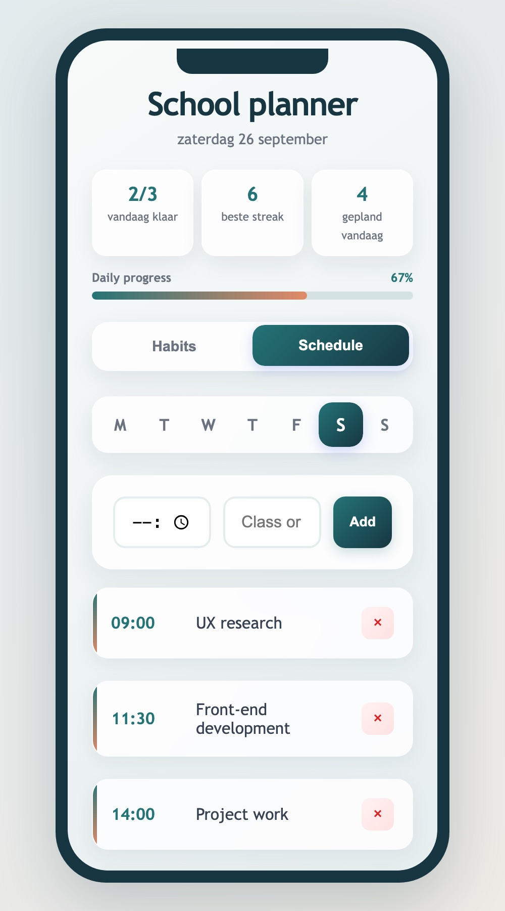

Een habit tracker voor studenten die meer ritme en overzicht willen in hun dagelijkse gewoontes.
De uitdaging: een herkenbaar dagelijks probleem vertalen naar een rustige interface die je meteen kunt gebruiken — zonder uitleg en zonder druk.


Habits moeten eenvoudig zijn: toevoegen, afvinken en direct zien hoe je ervoor staat. Meer niet.
Ik koos voor een zacht kleurenpalet en één duidelijke actie per habit: afvinken. Streaks en een 7-daagse geschiedenis geven motivatie zonder druk, en de voortgangsbalk toont in één oogopslag hoe je dag gaat.
Habits met streaks, dagelijkse voortgang, zoeken en inline bewerken, plus een weekschema voor lessen en activiteiten. Alles blijft bewaard in LocalStorage, ook na een refresh.
Omdat ik zowel het ontwerp als de code maakte, kon ik ideeën meteen testen. Ik leerde hoe belangrijk kleine interacties zijn: duidelijke feedback, goede lege staten en data die blijft staan.
Bekijk ook de andere projecten in mijn portfolio.